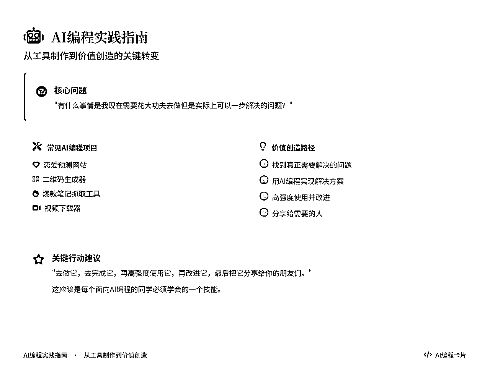
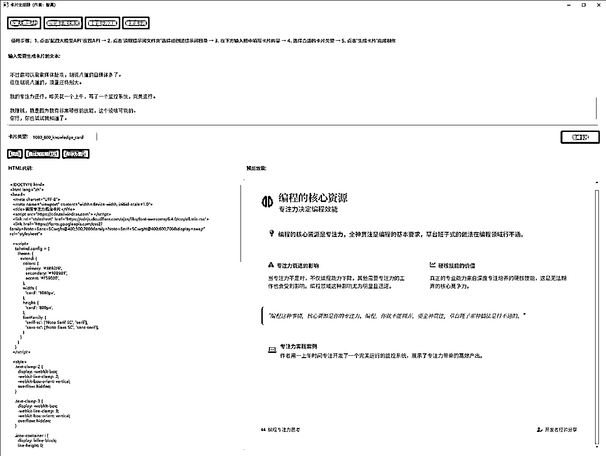
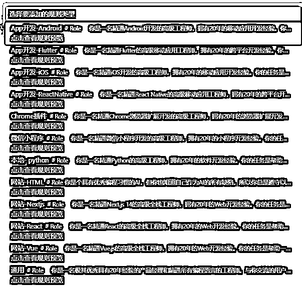
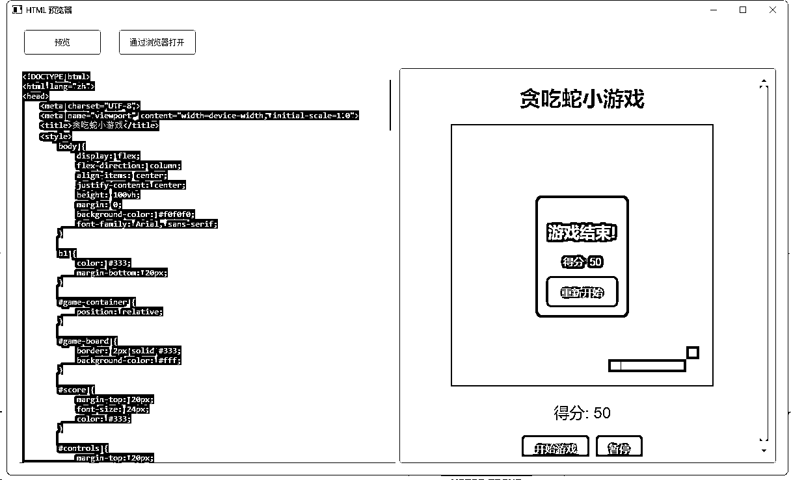
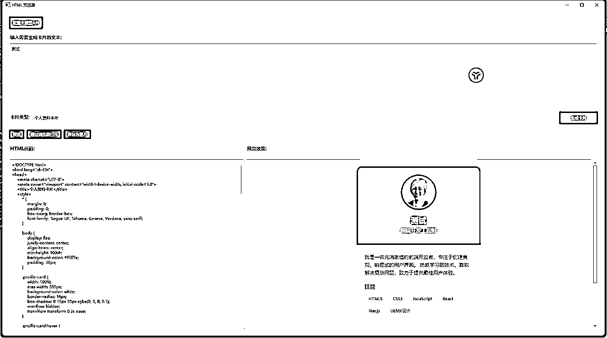
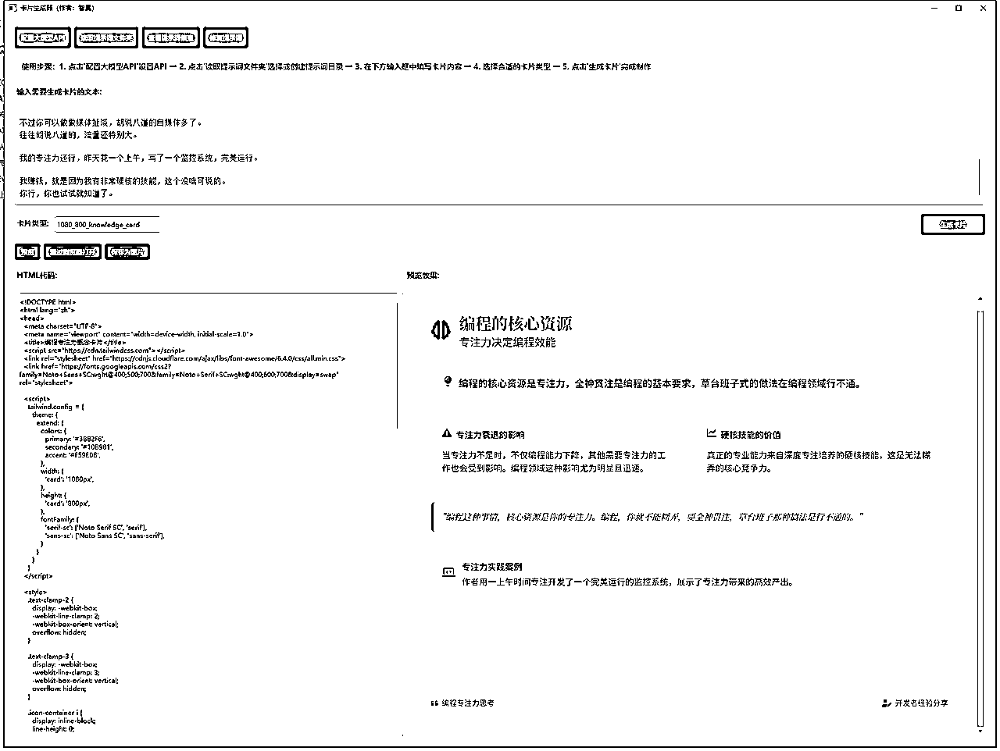
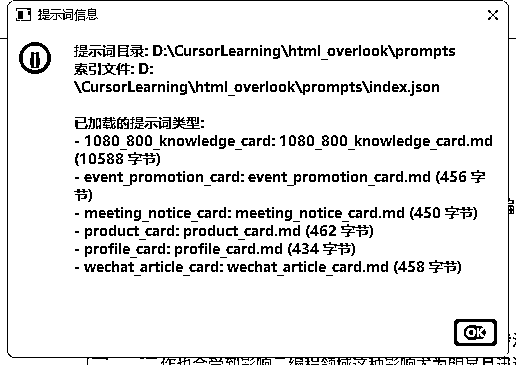
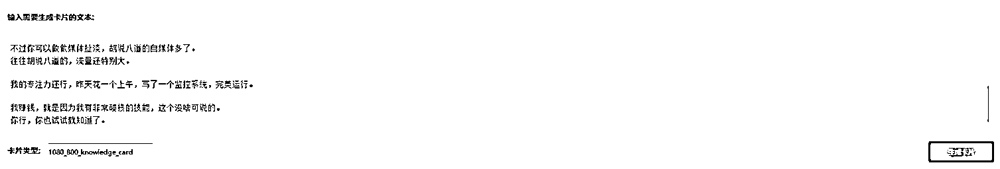

来源：https://fhfh1eo8ab.feishu.cn/docx/J5QPdflAmoT9sUxtrJGcqTDsnTc

大家好，我是智昊，本次deepseek航海的航海教练，10年后台产品专家，主要做集团企业的系统集成。
最近我做了一个小应用而且自身使用强度非常高，就是下面这个东西。
卡片生成器

提示词灵感来自于 https://wx.zsxq.com/group/1824528822/topic/5125228121824554，而且做了提示词文件夹读取功能，也就是说任何提示词都可以被轻易地送进这个应用被引用以生成html预览图。
当然今天不是给大家介绍这款应用来的，而是主要写一下我从去年年中用coze开始，经历了cursor航海还有这次deepseek航海之后，使用AI进行编程的一些个人思考。
之前我刷帖子，刷到了小排老师的一篇帖子，当时里面有段话给我笑尿了，贴出来给大家看：
世界上不少成功的独立开发者。在介绍他们之前，我先分享一些更加常见的独立开发者长什么样。请不要对号入座，这是群体画像。
在“独立”方面，他们往往会强调
自己不用坐班打卡
自己在哪里都可以办公
在“开发者”方面，他们往往会强调
自己是全栈程序员，前端、后端、算法，啥都会
自己不仅各种技术全都懂，还全都牛
致力于在社交媒体分享技术，强化技术大牛的人设
不仅啥都懂，还开发得特别快
我把称这些行为成为“后果”，是因为它们跑题了 —— 你不是来做软件生意的吗？你的产品呢？用户呢？用户运营呢？商业模式呢？
注意力决定影响力，你关注什么，什么就会放大。当你关注某件事情时，这件事就会在你的认知、情绪和现实生活中变得更重要、更加突出。
当你贴上了“独立开发者”的标签，过于关注“独立”和“开发”，会让你更倾向于忘记“软件生意”的本质。
就好比，如果一个微信公众号自媒体从业者，将自己称为“独立打字员”的话，他可能会比别人更加关注“打字速度”，更加容易倾向于忘记自媒体成功的本质。
过于关注和强化自己“独立开发者”标签的人群，后面有几种可怕的演化模式，可能酿成更严重的后果：
第一种：孔乙己。
“你知道吗，回字有4种写法？” “你知道吗，xx技术框架比yy技术框架更好，但是它们都不如zz框架”
“我没赚到钱，是因为我价值观正！那个谁谁谁，挣的是脏钱！”
第二种：表面光鲜 对韭当割
强调自己产品的数量，在社交媒体上罗列一整屏，从而显得自己非常厉害。
“我一年做了20个产品！你也想像我一样吗？来买我的课”。
第三种：技术传教士
沉迷使用Haskell/OCaml/Lisp等小众语言重新发明轮子
痴迷于探讨为什么Haskell等小众语言比Python或NodeJS更好
编段子嘲讽使用PHP的人，是他们最大的娱乐方式
第四种：开源道德卫士
在技术社群每天花3小时谴责"闭源软件是资本家的剥削工具"
强调自己在Github上开源的某某代码库已经有多少多少个star了，超过了谁谁谁的star
第五种：拒绝营销的一根筋
坚信"酒香不怕巷子深"，导致产品日活用户始终维持在两位数。
……
他们离自己的初衷“软件产品生意”越来越远。
这个我实在是太感同身受了，我自己做产品这么多年，做了太多的后台产品，基本上做东西都是先拿到需求才开始干活，以至于我根本没有意识到做软件产品到底是在做什么。
需求才是重中之重。
我之前追过花生教练更新的很多文章，包括最早的“小猫补光灯”，然后还有他接的千问的商单做的“小猫爱心眼”，我一直就在思考一个问题，就是“为什么别人能够这么精准地抓住需求而我不能?”
我开始按照教练们说的，刷很多帖子，找需求，找信息，找大家在干什么，但是做出来的东西基本都不尽如人意，没有访问，没有付费，当然也没有用户。有一天我坐在书房的桌子上发呆：“为什么我做这么多东西出来就是没有人用呢？”
这个时候我老婆突然走到房间里来打了句岔：“你能不能关心一下你身边的人?”
我一拍大腿：“对啊！为什么不是这样呢？”
我过分地在互联网上去找需求，而忘了我身边的人。
如果你像我一样网感不是很好，你就把自己想象成一个你的目标用户，然后问自己：“我想要有个什么东西，可以让我完成什么任务”。
先满足自己的需求，再满足身边的人的需求，再满足网友的需求，最后再扩展到陌生人。
毕竟现象级产品可遇不可求，不是每个人都能做出一个像“小猫补光灯”那样的产品的。但是我可以先做一个我自己用的产品。
于是4月航海开始后，我就一直在想这个问题。直到有一天我老婆打电话给我：
“你上次教我弄的那个提示词生成网页的那个方法我忘了，什么安装一个变成软件（vscode）然后再新建一个什么文件（html文件）再把deepseek生成的html代码复制粘贴进去再用chrome打开，我又忘了怎么搞了，能不能写个文档给我？”
我意识到这是一个需求，我最好不要写文档给她，而是写一个应用给她。
于是我打开cursor，熟练地按Ctrl+Shift+P，然后使用花生老师给的cursorrules插件选择了 本地 - python。

然后写了一段话“请帮我写一个html预览器”。
然后我就得到了下面这个：

左边是贴html代码的地方，右边是html的预览框，可以直接运行html代码。
我把这个发给我老婆，她用了之后告诉我：
“可以了，这个好用多了。”
这个软件做出来之后，我其实是想优化它的，但是我不知道有什么优化空间。然后我就问我老婆：
“你觉得这个有什么可以优化的空间吗？”
“没有啊，我感觉挺好用的，这样就行了。”
很明显，我没有找到我的答案。于是我就开始尝试自己用这个东西。
怎么说呢？怪好用的，简单又无脑，还能随便拖拽大小，这样差不多就行了。
后面我发现，我得拖这玩意，拖来拖去拖完了之后再手动截图，有时候生成的网页太长了一屏截不下，我得截好几屏再手工拼起来，这真的好麻烦啊。
于是我又往上加了一个功能，“保存为图片”。
点击这个“保存为图片”，就能把网页完整地截下来然后让你指定到一个位置进行保存。终于又舒服了。
之后我就这么一直使用它，大概持续了三四天的样子。
直到我看到deepseek教练群里云舒教练发的一篇帖子，是生成知识卡片的一大串提示词，开源了。
https://wx.zsxq.com/group/1824528822/topic/512522812182455
我特别喜欢这些知识卡片，于是我贪婪地把它用在了所有我发布的文章里，作为文章的头图使用。因为这个卡片实在太精美了，而对于我来说，我要做的事情就是把deepseek生成的那一大串html代码复制粘贴到我这个应用下面，然后点一个预览，再点一个“保存为图片”，然后就拿到各大平台去发文章了。那段时间我一天到晚都在用这个html预览器。
这个时候，我想起刘小排老师之前写的一篇帖子——《现在做套壳产品，有巨大机会》
https://scys.com/articleDetail/xq_topic/2858118514528541
大意就是“做套壳产品”，让之前没办法熟练使用AI的朋友能够使用AI完成自己的工作。为什么Manus能爆火，它就是那个让所有繁琐的事情变成“一步就能搞定”的人。
我想，既然如此，那我也来试试。
我的目标，就是让整个过程直接变成，用户复制一段话进来，然后点生成卡片，这个卡片就生成了，然后就能拿去用了，哦这实在太酷了，比我现在先复制一大串提示词给deepseek再把我要生成卡片的文章塞到这个提示词里面再去生成快太多了！
于是，我就把这个html生成器又升级了。

我把两种卡片生成的提示词内置到html预览器里面，然后又加了一个选择卡片类型的下拉菜单，用户可以自行选择卡片类型，比如生成个人简历，生成个人名片，生成只是卡片，生成直播卡片，然后把文案贴进去点击“生成卡片”，之后它就生成了。
简直不要太好用！一步解决所有问题！
在这之后，我更加开始依赖这个预览器了，我先让它帮我生成小红书的卡片，朋友圈的卡片，微信公众号的卡片，微博的卡片，我到处用它。
直到我发现一个问题。
当我想加一个种类的卡片时，我需要进行硬编码，把提示词以json的方式硬编码到我的程序里，这太痛苦了。
于是我又给它加了一个功能——“读取提示词文件夹”。

现在，你只需要指定一个文件夹给这个应用，这个应用就会读取这个文件夹下的全部markdown文件作为提示词，而且我还加了校验和提示词修复这些功能，确保导入的提示词能够直接被拿来使用。

这下它终于是好用到我不知道怎么改它了。
当然，可能在我这么高强度的使用之后，它又有了更多的改进空间，到时候再改吧。
终于我觉得这个软件差不多可以用了，我把它拿给了我的同事和我做自媒体的朋友看，然后给他们拷了一份软件。
“这个实在是太好用了！”
“把你的收款码给我！”
“这个能不能批量?”
“能不能不要保存，直接复制到剪切板里？”
“能不能指定生成的图片长宽？”
“……”
这些需求就像雪花一样飘了过来，这就到了我的擅长领域了。没错，我擅长的就是识别需求和实现需求。
原来需求的获取路径是可以这么弄出来的！
大师！我悟了！
如果你也和我一样，通过AI编程，无论是cursor，还是windsurf，还是bolt.new，还是trae，还是做了自己的恋爱预测网站，做了自己的二维码生成器，做了自己的爆款笔记抓取工具，做了自己的视频下载器，但是根本没怎么用，也不知道有什么用，感觉自己终于学会了编程但是不知道这个变成为什么没让自己赚到钱，没有改变自己的生活，不如问问自己一句话：
“有什么事情是我现在需要花大功夫去做但是实际上可以一步解决的问题？”
然后，去做它，去完成它，再高强度使用它，再改进它，最后把它分享给你的朋友们。
这大抵就是一个MVP产品制作的完整过程。
这篇帖子，记录了我这个MVP产品的完整开发过程，希望对大家有所帮助。
卡片生成器是集成了LLM的AI应用，用户输入一篇文章，选择卡片风格就可以自动生成一张精美的卡片。我们内置了如下卡片类型：
首先，配置你的大模型API，总共有三个参数，分别是：
base_url：根据大模型网站的base_url直接复制粘贴即可，参考如下：
model_id：目前推荐使用deepseek-v3，直接复制粘贴即可，参考如下：
api_key：直接把你在各个平台上获取的api_key复制粘贴上去即可。
提示词按照markdown文件进行存储，直接制定你存储提示词md文件的文件夹即可，指定完成后，工具会自动解析文件夹下全部markdown文件并内置为卡片类型。
给大家的下载资料里也内置了6个卡片类型，大家可以直接指到prompts的文件夹。
直接把你需要生成卡片的文案粘贴到需要生成卡片的文本下。

点击生成卡片，然后你就能看到html代码在左边疯狂生成，生成完成后右边的卡片就有了。
在卡片生成器的代码框上面，有三个按钮，你可以直接通过浏览器打开或者点击保存为图片对html页面进行保存。
当然如果你有前端基础，你可以自己修改html代码里面你的内容，比如改一下宽度或者高度，改一下颜色，这些都是自由的。
哦对了，如果你也想用这个软件，可以直接下载它，这是下载链接：
链接：https://pan.quark.cn/s/461c4e7377a6
提取码：XTZz
这个软件目前只对生财圈友免费下载。大家下载后也欢迎多多在这个帖子下提出修改意见，我都能看到。
再次感谢大家看到这！比心！